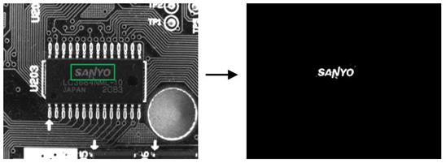

|
类型 |
生成 |
|
描述 |
图像自动二值化生成区域，对mask指定的掩膜区域内的图像进行自动二值化 |
|
语法 |
ZV_ReAutoThresh(img,mask,re,tabId)
参数： img：ZVOBJECT类型，输入图像 mask：ZVOBJECT类型，区域，指定二值化操作的区域，保留逗号不填或填入未使用过的变量则全图运算 re：ZVOBJECT类型，自动二值化得到的区域，输出参数 tabId：TABLE索引，输出参数，自动二值化使用的阈值 |
|
适用控制器 |
支持ZV功能或者5系列以上的控制器 |
|
例子 |
 ZVOBJECT img,mask,re,re_img ZV_ImgRead(img,"region1.png",0) '以原图像格式读取图片 ZV_ImgInfo(img,0) '获取图像基本信息 ZV_ReGenRect(mask,219,194,151,45) '生成掩膜区域 ZV_ReAutoThresh(img,mask,re,0) '对mask指定区域内图像进行自动二值化 ?"自动二值化的阈值为:",TABLE(0) ZV_ImgGenReBin(re,re_img,TABLE(0),TABLE(1)) '区域转二值图像 |